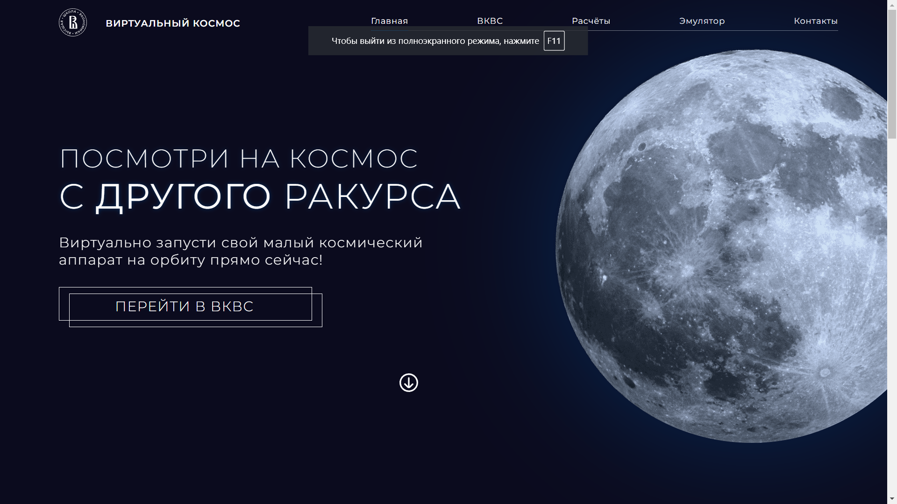
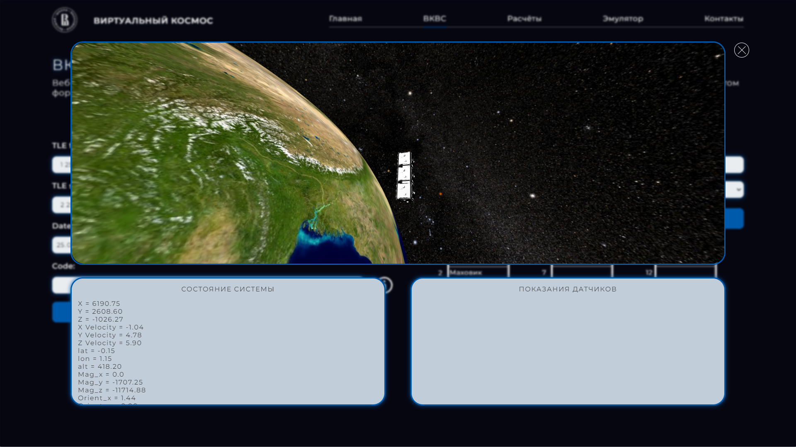

Сначала изучал алгоритмизацию на с++, написал графопостроитель с помощью обратной польской записи (вводишь
буквами и числами функцию, он строит график, переводя строковый тип функции в числовой).
Дальше познакомился с ООП на c++(несколько учебных приложений в QT), изучал основы Python-а, SQL(запросы,
триггеры, процедуры, спроектировали в команде базу данных футбольного клуба).
В конце-концов понравилась работа в браузере, погрузился во frontend, изучил нативный JavaScript, HTML,
CSS.
Поучаствовал в boostcamp от компании КРОК, закрепил знания javascript, познакомился немного с коммерческой
разработкой, и начал освоение React и TypeScript, nodeJS.
Образование
Высшее образование (3 курс) Дневная/Очная 2019
Национальный Исследовательский Университет Высшая Школа Экономики
Специальность: Информатика и вычислительная техника
Знания и навыки
- знания HTML5 и CSS3 (SCSS) - для вёрстки большинства сайтов, JS - очень хорошие знания базы (асинхронность,
замыкание, классы, DOM, прототипы и т.д.);
- опыт адаптивной верстки путём media-запросов;
- знания Figma, Bootstrap;
- знание SQL, Python;
- опыт написания алгоритмов и структур данных (из курса по алгоритмизации на с++);
- знание функционального React'а (react-router, hooks, жизненный цикл компонента с помощью хуков);
- опыт написания 3D в браузере с помощью ThreeJS;
- понимание клиент-серверного взаимодействия;
- опыт работы с git;
- могу написать не трудный бэк на expressJS;
- знаю как собрать проект с помощью webpack
Проекты
- Автоматизация процесса управления конвейером и информирование сотрудников о выполнении плана.
Разработка веб-приложения для данной цели (приложение написано на boostcamp'е в компании КРОК);
- Визуализация виртуального космоса и виртуального спутника (веб-приложение).
Приведение в порядок пользовательского интерфейса, переход на новый дизайн, переход на новый движок
BabylonJS -> ThreeJS, доработка деталей космоса и спутника, переход на React.
ССЫЛКА


- Разработка интерфейса веб-приложения (нашего факультета) статистических данных, результатов работы data
scientist'ов (на React); - Вёрстка страницы сайта (отборочное задание на
стажировку);
- Веб-приложение для редактирования локальной базы данных в реальном времени;
- Небольшой инструмент (задание для стажировки) - ССЫЛКА;